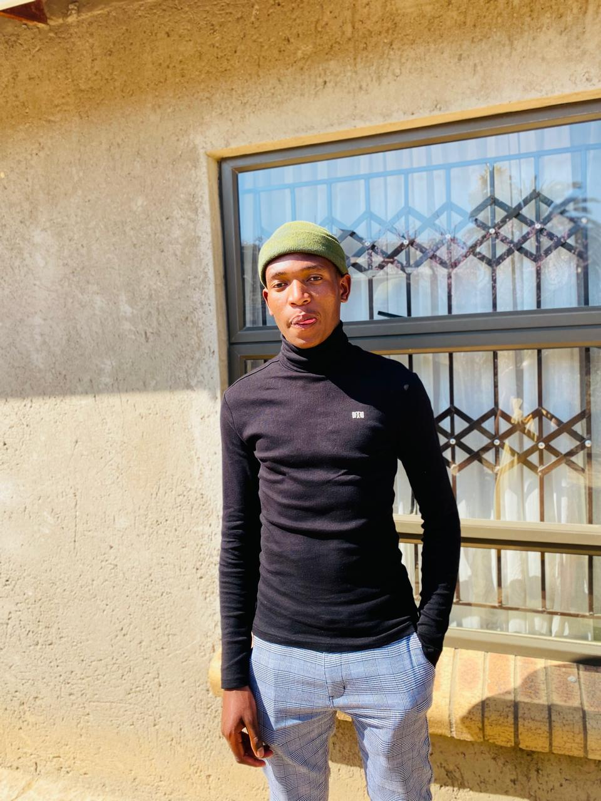

IT
Technology & Development
Developing technical knowledge through
programming, web technologies, databases,
data analysis and software development.
Explore technical skills →WELCOME TO MY PERSONAL PORTFOLIO
I am an ambitious and creative individual with a passion for technology, leadership, sports and music. My journey combines technical learning, teamwork, discipline and creativity, with a commitment to continuous personal and professional development.

01 / PROFESSIONAL OVERVIEW
A developing IT professional combining technical
knowledge, leadership experience and creative
interests to build a well-rounded professional identity.
MY PROFESSIONAL PROFILE
I am an Information Technology student at
Limkokwing University of Creative Technology,
with an academic background in programming,
web development, database management,
software engineering and data analysis.
I am particularly interested in software
development and using technology to solve
practical problems. I value continuous learning,
practical experience and the opportunity to
contribute to meaningful projects.
Beyond technology, my involvement in soccer
and choral music has strengthened my appreciation
for teamwork, discipline, creativity and leadership.
02 / MY CAPABILITIES
Different experiences have helped shape my
abilities, interests and approach to personal
and professional development.
Developing technical knowledge through
programming, web technologies, databases,
data analysis and software development.
Explore technical skills →University class representation across
Years 1 to 3, together with experience
conducting a high-school choir.
Explore my experience →Soccer experience progressing from
C Division through B Division to A Division,
demonstrating commitment and teamwork.
Read my story →Choral singing, choir conducting,
competition participation and a
first-prize quartet achievement.
Explore my achievements →03 / SELECTED WORK
Academic and practical projects that demonstrate my growing technical abilities.
A machine learning project focused on
predicting student academic outcomes using
educational data and a Random Forest model.
04 / PROFESSIONAL DEVELOPMENT
I am continuously developing my technical knowledge,
strengthening my practical experience and looking
forward to opportunities where I can learn,
contribute and grow professionally.